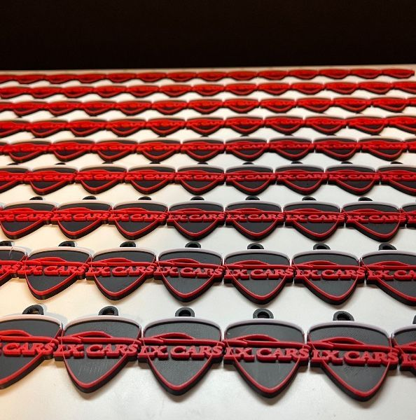
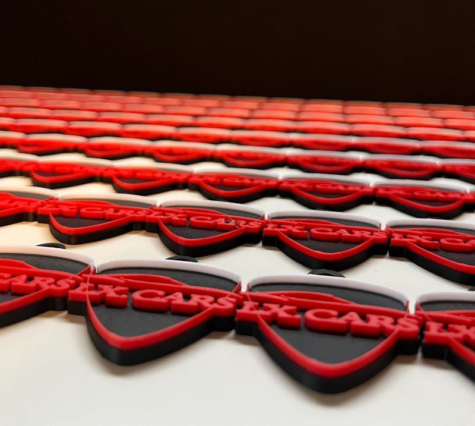
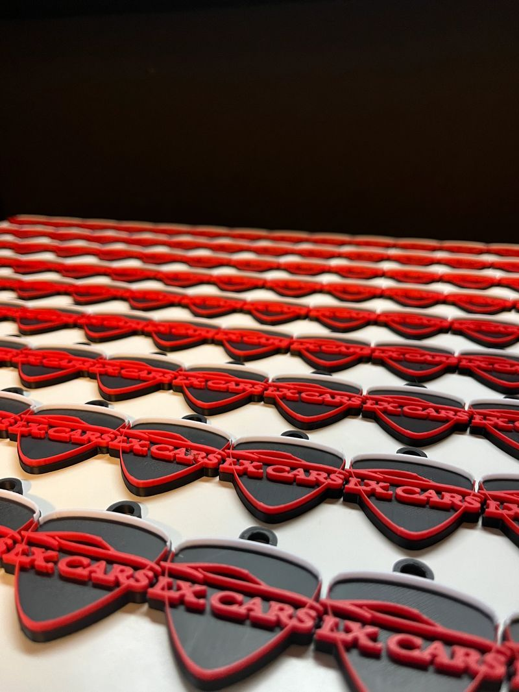

300 porte-clés bicolores avec logo pour le garage Lx Cars
Le garage Lx Cars, spécialiste des voitures d'occasion à Polleur (région de Verviers), nous a commandé 300 porte-clés avec son logo redessiné en bicolore noir-rouge. Du prototype validé jusqu'à la production en série, une collaboration exemplaire.

Les 300 porte-clés Lx Cars : du plateau à la livraison





Un garage qui voulait un objet publicitaire à l'image de sa marque
Notre équipe s'est rendue chez Lx Cars, un garage spécialisé dans la vente de voitures d'occasion situé à Polleur, dans la région de Verviers. Le gérant, intéressé par les possibilités de l'impression 3D, souhaitait découvrir notre travail et lancer une première collaboration concrète.
Sa demande: 300 porte-clés portant le logo de son garage, à distribuer à ses clients lors de chaque vente de véhicule. Un objet publicitaire de qualité, personnalisé, qui renforce l'image de marque du garage et rappelle son nom à chaque utilisation des clés du véhicule acheté.
Avant de lancer la production, nous avons entièrement redessiné le logo Lx Cars pour l'adapter au format porte-clé en impression 3D bicolore: épaisseurs optimisées pour la lisibilité, relief calculé pour que le logo soit clairement visible en deux couleurs, trou de fixation intégré dans le design. Ce travail de conception préalable est systématiquement inclus dans nos productions en série.
PLA bicolore AMS, lots de 10, prototype inclus avant production
Une fois le dessin du logo finalisé, nous avons d'abord imprimé un prototype pour obtenir l'accord du client avant de lancer la production complète. C'est notre méthode systématique pour toute commande en série: valider visuellement le rendu, les dimensions, la qualité du bicolore et la solidité du trou de fixation avant d'engager le temps machine sur 300 pièces.
La production a été lancée sur notre Bambu Lab X1 Carbon équipé de l' AMS (Automatic Material System), le système de changement automatique de filament. Grâce à l'AMS, la machine bascule automatiquement entre les deux coloris en cours d'impression pour réaliser les deux couleurs sans intervention manuelle, une technologie qui garantit une qualité constante sur l'ensemble de la série.
Nous avons procédé par lots de 10 porte-clés par impression, en optimisant le placement sur le plateau pour maximiser l'efficacité et la régularité. 30 sessions d'impression au total pour atteindre les 300 exemplaires. Le client était très satisfait du résultat et n'hésitera pas à faire appel à nous à nouveau.
L'impression 3D pour votre communication et vos objets promotionnels
Les porte-clés, badges et objets publicitaires imprimés en 3D sont une alternative originale et durable aux goodies plastiques génériques. Contrairement aux objets de masse, chaque pièce est imprimée avec votre logo exact, dans vos couleurs, sans minimum de commande élevé et avec un prototype de validation inclus.
Nous produisons des séries de 10 à 500 exemplaires avec contrôle qualité à chaque lot. Les matériaux disponibles incluent le PLA monocouleur ou bicolore AMS, le PETG pour une meilleure résistance, et le TPU pour des porte-clés flexibles. Chaque commande commence par un prototype gratuit ou à prix marginal selon le projet.
Devis gratuit sous 24h. Nous redessinons votre logo si nécessaire, imprimons le prototype, attendons votre validation et lançons la production. Contactez-nous au 04.290.11.92 ou via notre formulaire sur od3d.be.
Confidentialité & NDA: Les réalisations que nous partageons ici sont présentées avec l'accord explicite de nos clients. Tout projet soumis à un accord de non-divulgation reste strictement confidentiel, aucune photo, aucun détail technique ne sera jamais divulgué sans autorisation. Vos fichiers et projets sont protégés.
D'autres projets

Pièce en Polypropylène pour Logopède
Outil de rééducation sur mesure pour logopède, reproduit en polypropylène par impression 3D et adapté aux besoins des patients. Réalisation O&D…
Ouvrir la fiche →
Engrenage de Hachoir Reproduit en 3D
Engrenage de hachoir cassé reproduit en PLA : rétroconception en 1 h, pièce prête en moins de 48 h. Une réalisation d'O&D Impression 3D, Welkenraedt.
Ouvrir la fiche →
Pièces Audi S3 Reproduites en PAHT-CF
Reproduction de pièces Audi S3 endommagées en PAHT-CF et PLA : grille de pare-chocs et caches logo S3. Une réalisation d'O&D Impression 3D, Liège.
Ouvrir la fiche →
Maquette Infrabel
Rails miniatures en PLA imprimés en 3D pour la maquette d'inauguration d'Infrabel. Une réalisation d'O&D Impression 3D, atelier à Welkenraedt (Liège).
Ouvrir la fiche →
Semelles de Tabouret
Semelles de tabourets 40 cm en PLA noir, imprimées sur mesure pour des gîtes Airbnb à Herve : 24 h par pièce, prototype offert. Réalisation O&D…
Ouvrir la fiche →
Pic de Barrière Reproduit en ASA
Pic de barrière décoratif cassé, redessiné à partir de photos et réimprimé en ASA résistant aux UV sur Bambu Lab X1C. Réalisation O&D, Welkenraedt.
Ouvrir la fiche →Un projet similaire ?
Envoyez-nous votre pièce, votre fichier ou une simple photo : réponse sous 24 h.